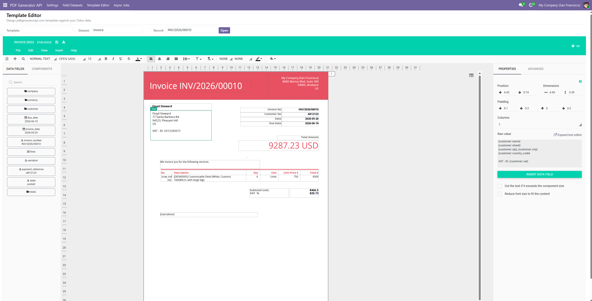
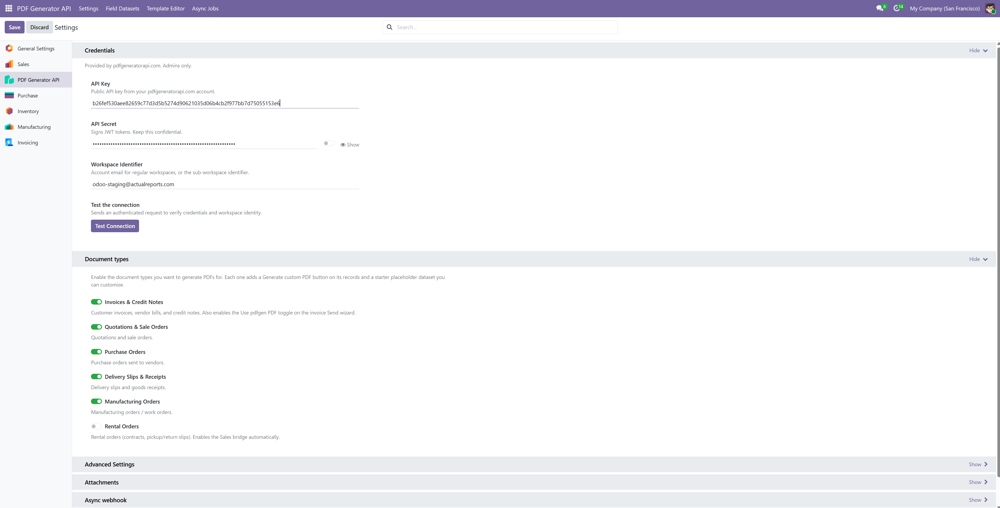
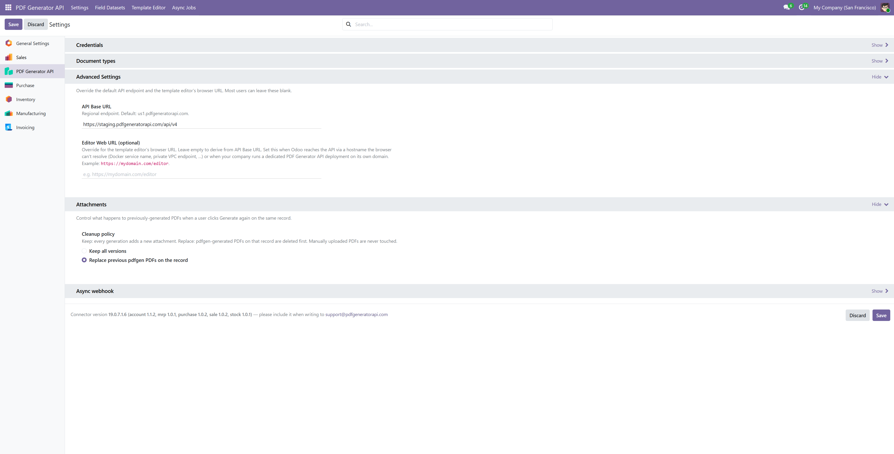
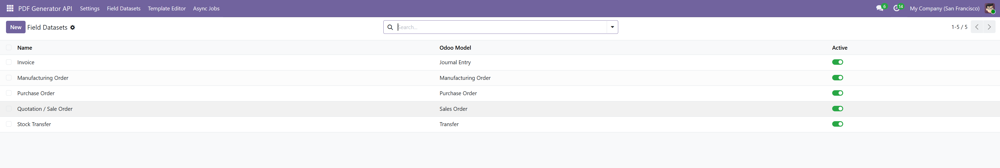
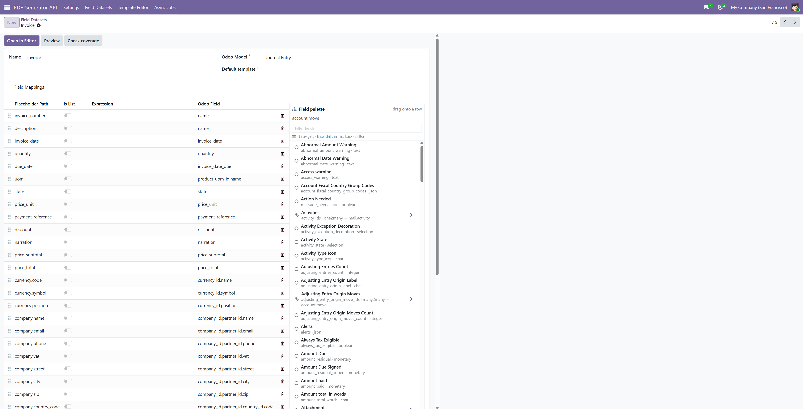
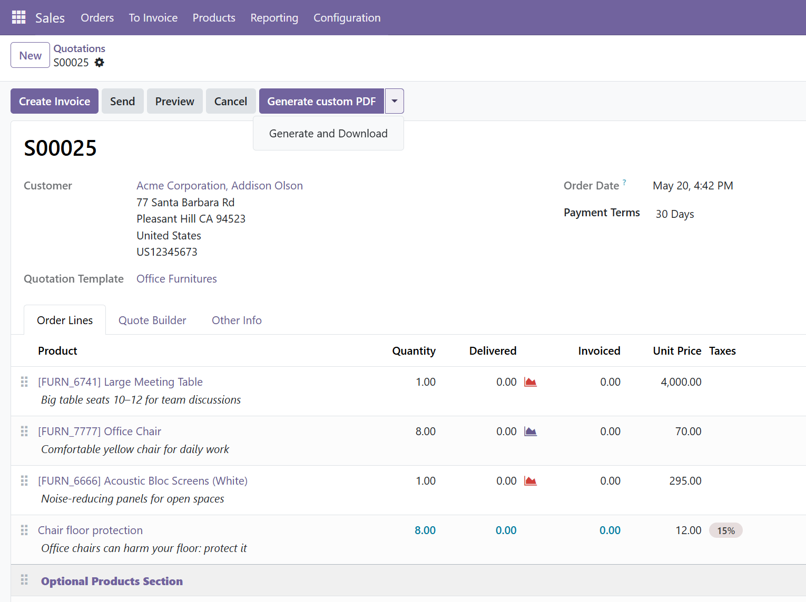
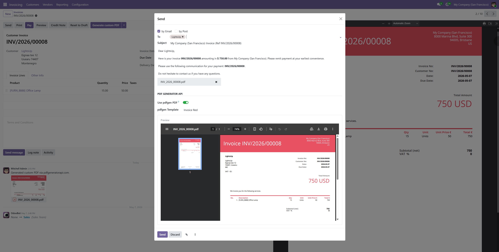
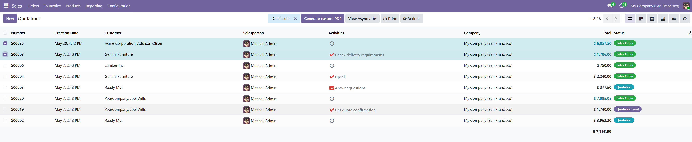
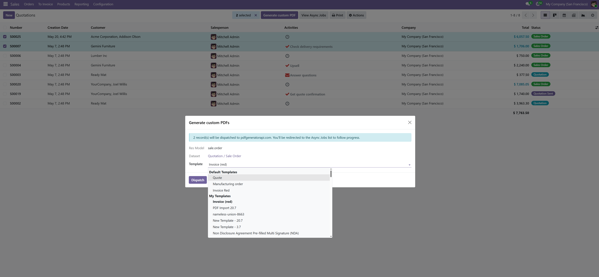

PDF Generator API for Odoo
This module plugs pdfgeneratorapi.com into Odoo: design templates with a visual drag-and-drop editor, map Odoo fields to template placeholders without code, and generate PDFs from invoices, quotations, purchase orders, transfers, manufacturing orders, and rental orders.

From credentials to a branded PDF in your customer's inbox. Every step happens inside Odoo.
Paste your pdfgeneratorapi.com API key, secret, and workspace identifier under Settings → PDF Generator API and click Test Connection. Then tick the document types you need. Each one installs its bridge module and seeds a ready-to-edit field dataset.

Override the regional API endpoint or the editor's browser URL for on-premise and Docker setups, and decide what happens to older PDFs when you re-generate: Keep all versions or Replace previously generated PDFs on the record. Manually uploaded files are never touched.

Every document type gets a field dataset. Map each template placeholder to an Odoo field or a composed expression, mark repeating sections (order lines, taxes) as lists, and drag fields straight from the palette onto a row, no code required. Check coverage tells you exactly which placeholders are still unmapped.


Pick a template, a dataset, and a real record, then Open the pdfgeneratorapi.com editor right inside Odoo and design against live data. Opening one of the default templates creates an editable copy under My Templates, so the originals stay intact.
Click Generate custom PDF on a supported record. The PDF is attached and an audit line is posted to the chatter. Prefer to grab the file straight away? Use the Generate and Download option in the dropdown.

With the Invoicing bridge installed, the invoice Send wizard shows a toggle and a template picker with a live preview. Flip it on and your customer receives your branded design in place of the standard Odoo report.

Select any number of records in a list view, click Generate custom PDF, choose a template, and Dispatch. Each record runs as its own async job with a signed webhook callback, and you are redirected to the Async Jobs list to follow progress.


This is the framework module: it ships the API client, the template editor embed, per-model field datasets, coverage diagnostics, and the async job machinery. It adds no buttons to your documents by itself; you pick the document types you want under Settings → PDF Generator API → Document types, and Odoo installs the matching bridge module automatically:
| Document type | Bridge module | What it adds |
|---|---|---|
| Customer invoices, vendor bills & credit notes | pdfgeneratorapi_connector_account |
Generate button on invoices, plus a toggle in the Send wizard so customers receive your PDF Generator API design instead of the standard report |
| Quotations & sale orders | pdfgeneratorapi_connector_sale |
Generate button + starter dataset for sale.order |
| Purchase orders | pdfgeneratorapi_connector_purchase |
Generate button + starter dataset for purchase.order |
| Delivery slips & receipts | pdfgeneratorapi_connector_stock |
Generate button + starter dataset for stock.picking |
| Manufacturing orders | pdfgeneratorapi_connector_mrp |
Generate button + starter dataset for mrp.production |
| Rental orders | pdfgeneratorapi_connector_rental |
Rental-specific dataset on top of the Sales bridge. Requires Odoo's Rental app (sale_renting, shipped with Odoo Enterprise) |
The same machinery extends to any other Odoo model: create a field dataset for the model and inherit the document mixin, with no hardcoded document types anywhere.
| Hosting | Install | Outbound HTTPS |
|---|---|---|
| Odoo.sh | Yes | Yes |
| Odoo on-premise (Enterprise) | Yes | Yes |
| Odoo Community | Yes | Yes |
| Odoo Online (SaaS) | No | N/A |
Odoo Online does not allow third-party apps; this module cannot run there. The Rental bridge additionally requires the Rental app (sale_renting), which ships with Odoo Enterprise.
When you generate a PDF, the record data mapped in your dataset is transmitted to pdfgeneratorapi.com over HTTPS. For an invoice, this typically includes: number, dates, state, currency, company and customer details (name, address, VAT), line items (description, quantity, price, taxes), totals, payment reference, and notes.
Requests are signed with a short-lived JWT (HS256) using your API secret. No data leaves Odoo outside an explicit Generate action (or an async batch you dispatched).
See the PDF Generator API privacy notice (at pdfgeneratorapi.com/privacy-notice) for how transmitted data is handled.